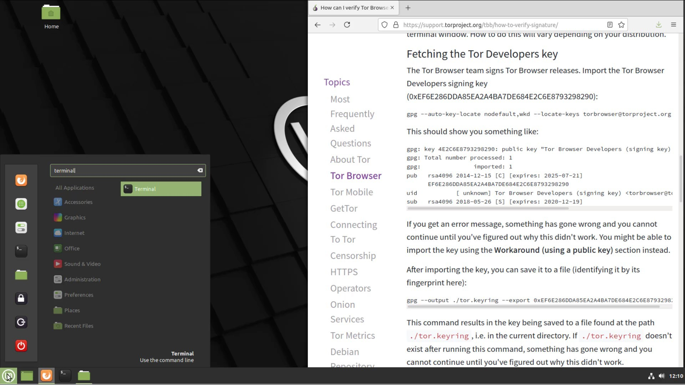
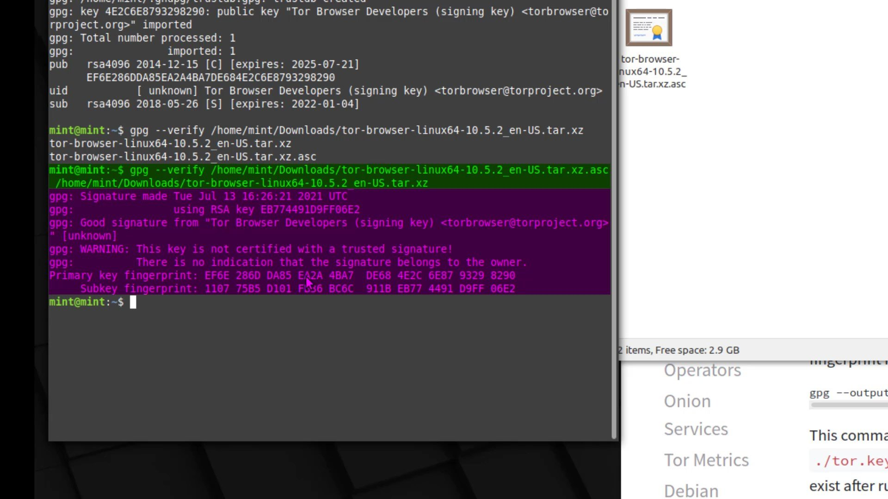
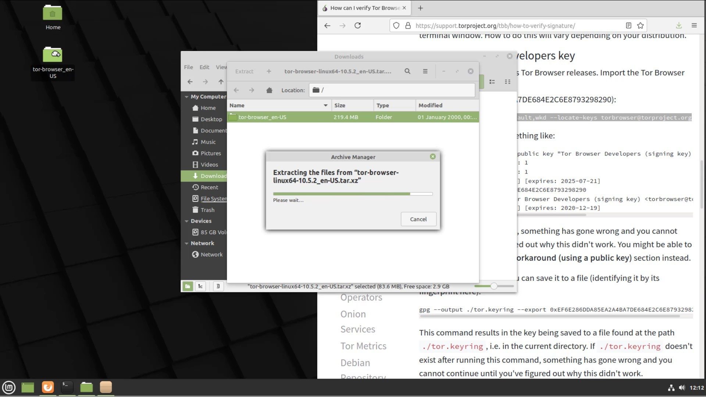
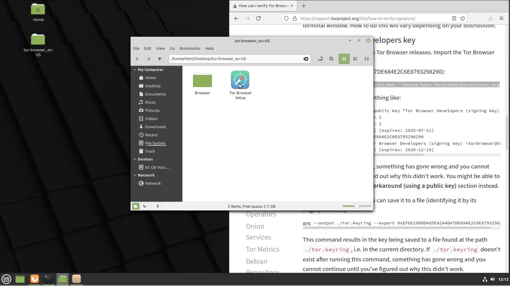

Tor Browser Setup (Linux)
Before the installation process, you should perform signature check to verify the content of the setup file you downloaded. You can use the official guide to follow the verification steps easily. I added this verification guide link in this lecture sources.
You don't need to install an external tool for file verification as it is in other operating systems. Most Linux distributions usually come with a GPG tool. If there is no verification tool in the Linux system you are using, you can reach me from the question and answer section.
In order to verify the signature, you first need to import the developer key. If you are using Linux but have never opened the command line before, you can open it by searching for " command line " or " terminal " or by finding it from the list of applications.

After opening your terminal, let's enter command to get the developer key.

When you enter the command correctly, the developer key is imported as you can see.
After importing the key successfully, let's enter command by specifying the locations of the setup and signature files downloaded. Since the files I download are in the downloads folder, I enter command in this way. When entering the command, it is important that you first specify the signature file, that is, follow the command order. When you click the tab key while typing the file names, the name will be completed automatically.

And as a result, the output i got matched with the developer key i imported, proving that my file is signed by the Tor developers and has not been modified. If your file was a modified, you wouldn't be able to get this output as this signature match wouldn't be provided. In this case, you need to download the setup file and verification key from an alternative download source again and try this verification process again.
Now that you have verified setup file, you can start using Tor browser by extracting it from the archive file to a location you want. When using the Tor browser on Linux, it comes preinstalled without the need for installation. All you have to do is decide where you want to locate this file. I extract the contents of the archive to my desktop location.

To run my browser, I go to the file location I extracted and double click on its icon.

In the window that opens, I click the "Connect" button to connect the browser to the Tor network.

After a short while, the connection is ready and Tor browser is opened without any problems. Thus, we have safely downloaded and installed Tor browser on the Linux system. We will talk about its use in detail in the following lectures.

Finally, I would like to point out that it is not have to perform the verification process, but it is an extremely important detail for your security. As there is no difficulty at verification steps, I strongly recommend that you verify before the installation process.